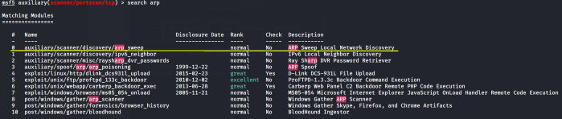

find live hosts with an ARP scan
load the module arp_sweepuse auxiliary/scanner/discovery/arp_sweep
we have to set the parameter RHOSTS because is required, and is used to define the target address range we want to scan
set option RHOSTS:
set RHOSTS 192.168.1.0/24